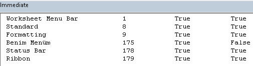

Nedir
Add-inler, Excel'in fonksiyonalitesini artıran araçlardır. 3 çeşidi
bulunur:
- Excel Add-in: Bunlar kendi içinde ikiye ayrılır. XLA/XLAM uzantılı olanlar VBA ile geliştirilirler. Bu sayfada bunlar incelenecektir. Bir de XLL uzantılı olanlar vardır, bunlar C/C++ ile yazılırlar ve genelde UDF yazmak için kullanılırlar. VBA ile yazılan kodlara göre çok daha hızlıdırlar. Bunlara VSTO menüsü altında şurada değiniyoruz.
- COM Add'in: VSTO teknolojisi ile geliştirilirler. Bunu bu
sayfada değil,yine VSTO altında şurada
inceleyeceğiz. VBA tecrübesi olan birinin VB.Net'i(ve/veya C#'ı) hızlıca öğrenmesi
akabinde geliştirilebilir. Benim de kendime ait bir
COM add-in'im bulunmaktadır.
- Office/Web Add-ins: Javascript ile web tabanlı
geliştirilirler. En son çıkan yöntemdir. Microsoft bundan sonra bu
konuya ağırlık verecek gibi görünüyor, ancak hiç javascript bilmeyen
birinin harcı değildir. Genelde ticari amaçlı olarak oluşturulurlar.
Bunların dışında bir de VBE add-inleri vardır, ki bunların esas amacı
Excel ön yüzde değil, VBE'de kodlama yaparken
hayatımızı kolaylaştırmaktır.
http://codevba.com/ sayfasında böyle
bir add-in bulunmaktadır. Özellikle VBA dünyasında yeniyseniz ve kodları
hızlı bir şekilde yazamıyorsanız bu add-in'in size sunduğu hazır kodlar
oldukça işinize yarayacaktır. Normalde ücretli ancak 30 günlük deneme
süresince kullanıp karar verebilirsiniz.
Erişim
Biz bu sayfada yeni bir Excel Add-in yapmayı göreceğiz ancak hali
hazırda Microsfot tarafından eklenmiş mevcut Excel Add-inlere(Solver,
AnalysisToolpak gibi) File>Options>Add-ins mensünden ulaşabiliyoruz.
Bir diğer ve hızlı alternatif de, Developer menüsünden ulaşmaktır.

Ancak o anda
hiç açık sayfa yoksa bu kısım inaktif gelir.
Excel kurulduğunda bunlardan bazısı hazır olarak gelir ancak hiçbiri
seçili değildir. Bunlardan Analysis ToolPak ve Solver çok sağlam araçlardır.
Bunları Excel ana mensünde ele alacağız.
Kullanım amacı
Üst seviyede baktığımızda, kendimiz için olsun başkalarının kullanımı
için olsun farketmez, kodlarımızı bir workbook içine koyup insanlara
dağıtmanın daha iyi bir alternatifidir Add-inler. Zira, o workbook içindeki
kodlarımız sadece o workbookta kullanılır. Personal.xlsb haline getirip göndersek
bile kullanımı zor olur, zira bir arayüz sağlamamış oluruz. Belki bir
userform yapıp, workbook_open içine de bu formu açan bir makro
yazabiliriz ama bu formun kullanımı add-inlerin menülü kullanımı kadar
pratik olmayacaktır. Ayrıca UDF'ler için hala dosya adını uzun uzun
yazmanız gerekcektir: Personel.xlsb!myfunction gibi. İşte add-inler bizi
bu zahmetlerden kurtarır.
Amacımız, Solver veya kendi oluşturduğumuz Toplu Mail Gönderim Formu gibi bir tool'un çalışmasını sağlamak
olabileceği gibi aşağıdakine benzer bir menü oluşturup çeşitli makrolara
kolay erişim arayüzü sağlamak da
olabilir.

Özetleyecek olursak, add-inler;
- UDF'leri depolamak için en uygun yerdir
- Hazırladığınız tool'lara ulaşmak için menüler sağlar
- Bir görev yerine getiren makrolarınızı çalıştırmak için menüler sağlar
Yaratım
Makrolardan oluşan dosyamızı Save As dedikten sonra
xlam uzantılı olarak
kaydederiz.(2007 öncesi versiyonlarda yaratılan add-inler xla
uzantılıdır)
Bu add-ini istediğimiz yere kaydedebiliriz ancak default add-in adresine
yerleştirmek ona ulaşmak adına da kolaylık sağlayacaktır. Default adres, Immediate
Windowa Application.UserLibraryPath yazarak elde edilebilir, bende "C:\Users\Volkan\AppData\Roaming\Microsoft\AddIns\"
gibi geliyor.(Application.LibraryPath komutu ile Solver gibi built-in
add-inlerin adresine ulaşırız)
NOT:Bir şekilde Excel, add-ininizi kaydetmezse,
File>Open diyerek ilgili adresten add-ini açmaya çalışın. Bu durum, add-inlerle ilgili bilinen bir problemdir.
Bu arada örnek dosyaya
buradan
ulaşabilirsiniz.
Ok der demez dosya Excel önyüzden kaybolur. Onları ancak VBE
ortamında görürüz.(XLA/XLAM olanlardan bahsediyorum, zira XLL uzantılı
Excel add-inleri VBE'de dahi görünmezler)

IsAddin özelliği
VBE'ye geçip ThisWorkbook'tayken Properties'e bakınca IsAddin
özelliğinin True
olduğunu görürüz. Bunu False yaparsak dosyamız Excel önyüzde de
görünür, bu bilgiyi niye verdim, çünkü bir dosyayı add-in
yaptığımızda bu bilgisine True atanır. Bunu gösterme sebebi biz değiştirebilelim diye
değil, nesne tabanlı bir dil olduğu için mecburen gösterir. Siz siz olun buna hiç dokunmayın.
Şimdi, sırada, bu addini içine birkaç fonksiyon yerleştirme var.
Fonksiyonları ekleme
Yeni bir modül açıp buna "fonksiyonlar" adını verelim, sonra buraya bir
iki fonksiyon ekleyelim.
Function hucresatırno(hucre As Range)
hucresatırno = hucre.Row
End Function
Function hucreadres(hucre As Range)
hucreadres = hucre.Address
End Function
Makrolar ekleme
Şimdi de geçici olarak VBE içinden çalıştırılabilecek makro kodları
yazalım, bunlara bir alt kısımda menülerden ulaşmayı da göreceğiz.
Aşağıdaki iki örnek kod, daha önce başka sayfalarda gördüğümüz toplu
rakam güncelleme makrolarına aittir.
'****************************rakam güncelleme bölümü**************************
Sub cBin()
Dim rakamlar As Variant 'Dizi tanımı
rakamlar = Selection.Value 'burada hücreden diziye okuma yaptık
For i = LBound(rakamlar) To UBound(rakamlar) 'i'ler satır boyutudur
For j = LBound(rakamlar, 2) To UBound(rakamlar, 2) 'j'ler satır boyutudur
rakamlar(i, j) = rakamlar(i, j) * 1000
Next j
Next i
Selection.Value = rakamlar
End Sub
Sub bBin()
Dim rakamlar As Variant 'Dizi tanımı
rakamlar = Selection.Value 'burada hücreden diziye okuma yaptık
For i = LBound(rakamlar) To UBound(rakamlar) 'i'ler satır boyutudur
For j = LBound(rakamlar, 2) To UBound(rakamlar, 2) 'j'ler satır boyutudur
rakamlar(i, j) = rakamlar(i, j) / 1000
Next j
Next i
Selection.Value = rakamlar
End Sub
'****************************dosya açma bölümü**************************
Sub abc_ac()
'gerçek dosya açmak yerine geçici olarak bir mesajbox çıkaralım
MsgBox "abc dosyası"
End Sub
Sub xyz_ac()
'gerçek dosya açmak yerine geçici olarak bir mesajbox çıkaralım
MsgBox "xyz dosyası"
End Sub
Şimdi bir de boş bir Userform oluşturalım, ve bu formu açacak küçük bir
prosedür daha yazalım, ve bunu makrolarım modülü içine koyalım.
'****************************form açma bölümü**************************
Sub formac()
UserForm1.Show vbModeless
End Sub
Add-inimiz bu haliyle çok kullanışlı değildir ancak bu haliyle bile dağıtıma
uygundur. Dosyayı alan kullanıcılar, içindeki fonksiyonları ve makroları tüm
dosyalarında kullanabilirler.
Menü dizaynı
Dedik ki, add-inlerin normalde IsAddin özelliği True atandıkları
için görünmezdirler. O zaman bunlarla
nasıl etkileşime geçeceğiz? Hadi biz işi biliyoruz, VBE ortamına geçip
oradan makrolarımızı çalıştırabiliriz ancak bu add-ini kullanacak son
kullanıcılar için bu yöntem pek uygulanabilir bir yöntem değildir,
üstelik şık da değildir. Bizim için bile çok pratik değildir,
her defasında gidip VBE'den kod çalışıtıracak değiliz. İşte addinlerdeki makroların kolay kullanılabilmesi için menüler
burada devreye girer.(Fonksiyonlar zaten her halükarda Excel ön
yüzde kullanılabilir durumdadır)
Şimdi, menüler oluşturup bunlar elimizdeki prosedürlerimizi yerleştirmeye
çalışalım. Bu arada tabiki içiçe altmenüler oluşturulabilir ancak
bunlar pek sevimli olmaz, siz 1
taneyle yetinmeye çalışın. Şöyle yapmak yerine,
Şöyle tercih edilmelidir. Aksi halde kullanıcılar menülerde
kaybolur.
Aşağıda örnek uygun bir örnektir.
Menü nesneleri
Öncelikle kavram karmaşasını netleştirmek adına elimizdeki
kavramları bi ele alalım.
Menü: Konuşma dilinde, tıklandığında altında alt menüler ve
butonlar çıkan nesnelerdir. VBA'de böyle resmi bir nesne
bulunmamaktadır.
Biz bu ifade ile hem CommandBarları hem de PopupControlleri
kastedeceğiz. Kullandığımız bağlama göre anlamı değişebilir.
CommandBar: Biz çok fazla CommandBar oluşturmayacağız,
zira Excel 2007 ile gelen Ribbon arayüzünden sonra commandbarların
bir esprisi kalmamıştır. Zaten eklenen tüm commandbarlar olsun
popupcontroller olsun hep ribbonda Addins menüsü
altına giderler. Biz yeni Commandbar yaratmak yerine
varolan CommandBarlar üzerine PopupControl yerleştireceğiz. Tabi
örnek olmasında adına küçük bir CommandBar da yaratacağız. (Ribbon
özelleştirme için buraya tıklayınız)
PopupControl: Bunları hem Ana Menüleri oluşturmak için
kullanacağız. hem de Alt menüleri oluşturmak için kullanacağız.
Ben
CommandBara yerleştirilen ilk popupcontrole Ana menü, onun altına
yerleştirilen popupcontrollere ise Alt menü diyorum. Yukarıdaki
resimde "Excelent" bir Ana menüdür, "bölme makroları" ise bir alt
menü. Ana menüler aşağı doğru açılır ve menü oku aşağı yöndedir. Alt
menüler yana doğru açılır ve menü okunun yönü de sağa doğrudur. Ama
sonuçta ikisi de bir PopupControldür.
Aşağıdaki resimde Makrolarım ve Excelent menüleri, mevcut CommandBarlardan
1 numaralalı commandbar olan "Worksheet Menü Bar"'a birinci seviyeden eklenenen Ana
Menülerdir. Yan taraftaki Custom Toolbars kısmında eklenen menü(adı
"Benim Menüm") ise bir Commandbar olup, seviye olarak diğer commandbarlarla aynı
seviyededir.
Şimdi diiyeceksiniz ki, diğer commandbarlar nerede? Ribbon arayüzü geldiği için artık bunlar yok. Excel 2003
kullananlar bunları hatırlayacaktır. Gerçi bunlar bir şekilde gizli
olarak duruyor gibidirler. Zira şu kodu çalıştırırsanız tüm
commandbarları görebilirsiniz.(Ben çok şişmesin diye ilk 10unu
yazdırdım)
Sub ribbonöncesimenülerilisteleme()
For k = 1 To 10 ' Application.CommandBars.Count
Debug.Print k & "-" & Application.CommandBars(k).Name
Debug.Print "---------------------------"
For i = 1 To Application.CommandBars(k).Controls.Count
Debug.Print Application.CommandBars(k).Controls(i).Caption
Next i
Debug.Print vbNewLine
Next k
End Sub
Bunun sonucu aşağıdaki gibi olacaktır. Farkettiyseniz Worksheet Menu
Bar'ın en sonunda benim eklediğim "Makrolarım" isimli popupcontrol
duruyor.
Aşağıdaki kodu çalıştırdığınızda ise visible olan commandbarları
görebilirsiniz.
Sub barları_listele()
Dim bar As CommandBar
For Each bar In Application.CommandBars
If bar.Visible = True Then
Debug.Print bar.Name & WorksheetFunction.Rept(" ", 20 - Len(bar.Name)), bar.Index, bar.Visible, bar.BuiltIn
End If
Next
End Sub
Bu kodu ben çalıştırdığımda aldığım sonuç aşağıdaki gibi.

Gördüğünüz gibi bir tek "Benim Menüm" Built-In değeri False çıktı.
Diğer nesneler
Popupcontrollere ya bir başka popupcontrol(alt menü olarak) ya da
bir buton ekleyebiliyoruz. Ve günün sonunda bu butonlara da çeşitli
makrolar atayacağız.
Commandbarlarda ise durum biraz farklı. Popupcontroller altına Combobox,
Editbox(Textbox gibi bir control) veya Dropdown koyamıyorken
Commandbarlara koyabiliyoruz.
Nesneler özeti
Elimizdeki nesnelere özetle tekrar bir bakalım:
- CommandBar: Hiyerarşinin en üstünde
bulunur. Ribbondan sonra anlamsızlaşmıştır ancak yine de
kullanılabilmektedir.
- CommandBarPopup: CommandBar altında eklenen
AnaMenü/AltMenü kontrolleri için kullanılırlar.
- CommandBarButton: Menülerdeki makroları
çalıştırmak için kullanılırlar.
- CommandBarControl: CommandBar nesnesine
eklenen EditBox(Textbox) ve DropDown nesnelerini temsil etmek
için kullanılırlar. MsoControlType parametresine atanan değerle
ne olacağı belirlenir. Bunlara da makro atanabilmektedir.
- CommandBarComboBox: Nedendir bilmem, bunun
için ayrı bir nesne yaratılmış. Açıklamaya gerek yok, adı gayet
açıklayıcı diye düşünüyorum. Bunlara da makro atanabilmektedir.
Kod Yazımı
Yöntem tespiti
Kodları yazarken farklı yöntemler benimsenebilir. Şöyle ki, Excel
açılırken Workbook_Open içine menüleri kalıcı olarak ekleyip,
Excelden çıkılırken Before_Close içine bunları kaldıran bir kod
yazmak bir çözüm olabilir. Araştırma yaparken bu tür kodları çok
görebilirsiniz. Ben ise, Workbook_Open içine menüleri geçici olarak
ekletiyorum, Before_Close içine ise hiçbirşey yazmıyorum, böylece
daha az kod yazmış oluyorum.
Bir de yükleme ve kaldırma event prosedürlerine yazılacak kodlar
var, onları biraz daha aşağıda ele alacağız.
Kodlar
Şimdi, ilk olarak Workbook_Open eventini yazalım. Zira
add-inimizi bir kez yükledikten sonra Excel her açılışta bu add-in
de arka planda açılacaktır. Yukarıda benimsediğimiz yönteme göre
menüleri her açılışta baştan oluşturmamız gerekecek.
Bu kısımda söylemek istediğim en önemli husus, kontroller
eklenirken Temporary parametresine True değerini atayarak ilgili
kontrolü geçici olarak eklemiş olduğumuzdur. Yukarıda yöntem
kısmında belirttiğim işi böyle yapıyorum işte. Diğer gerekli
açıklamaları kod içine comment olarak yazdım.
Private Sub Workbook_Open()
Call anaMenuEkle 'ilk olarak standart bir popup ana menü ekliyoruz
Call DropDownMenü 'Şimdi de yeni bir commandbar ekleyeceğiz
End Sub
İlk olarak ana menü kodumuza bakalım
Sub anaMenuEkle()
Dim bar As CommandBar 'Mevcut bir commandbara erişmek için
Dim Menu As CommandBarPopup 'Anamenü için
Dim altMenu As CommandBarPopup 'alt menü yaratmak için. Bu değişkeni birkaç kez kullanaceğız
Dim Dugme As CommandBarButton 'klasik buton. Bu değişkeni birkaç kez kullanaceğız
'Menülerin ekleneceği commandbarı seçelim
Set bar = Application.CommandBars(1) '1:"Worksheet Menu Bar", veya 9:"Formatting" de yazılabilir
'Öncelikle Menü çubuğuna "Makrolarım" isminde Ana menümüzü ekleyelim.
Set Menu = bar.Controls.Add(msoControlPopup, , , , True) '1 nolu 'Worksheet Menu Bar' menüsü altına bir Control(popupcontrol) olarak ekleniyor
'id:Burası hep 1. 1den sonrakiler built-in butonlar ekler, Ör:3 Save butonu ekler
'parameter:boş geçilir
'before:boş geçilir
'temporary:True parametresi ile ilgili kontrolü geçici yaratmış oluyoruz
With Menu
.Caption = "Makrolarım"
.Tag = "etiket"
.BeginGroup = True
End With
'1)şimdi ilk altmenuyu ekleyelim
Set altMenu = Menu.Controls.Add(msoControlPopup, 1, , , True)
With altMenu
.Caption = "Rakam güncelleme"
End With
'şimdi de makroları çalıştıracak butonları ekleyelim
Set Dugme = altMenu.Controls.Add(msoControlButton, 1, , , True)
With Dugme
.Caption = "*1000"
.OnAction = "cBin"
.TooltipText = "1000le çarpar"
.Style = msoButtonIconAndCaption
.FaceId = 71 'FaceId ekleyebilmek için bir üstteki gibi style = msoButtonIconAndCaption olmalı
End With
Set Dugme = altMenu.Controls.Add(msoControlButton, 1, , , True)
With Dugme
.Caption = "/1000"
.OnAction = "bBin"
.TooltipText = "1000e böler"
.Style = msoButtonIconAndCaptionBelow
'.FaceId = 72
.Picture = stdole.StdFunctions.LoadPicture("C:\inetpub\wwwroot\aspnettest\excelefendiana\images\vbauserform4.jpg")
End With
'+ ve - için örnekler çoğaltılabilr
'2)şimdi ikinci altmenuyu ekleyelim
Set altMenu = Menu.Controls.Add(msoControlPopup, 1, , , True)
With altMenu
.Caption = "Dosya açma"
End With
'şimdi de makroları çalıştıracak butonları ekleyelim
Set Dugme = altMenu.Controls.Add(msoControlButton, 1, , , True)
With Dugme
.Caption = "abc dosyasını aç"
.OnAction = "abc_ac"
.Style = msoButtonIconAndWrapCaption
.FaceId = 73
End With
Set Dugme = altMenu.Controls.Add(msoControlButton, 1, , , True)
With Dugme
.Caption = "xyz dosyasını aç"
.OnAction = "xyz_ac"
.Style = msoButtonIconAndWrapCaptionBelow
.FaceId = 74
End With
'başka dosyalar da ekleneblir
Set Dugme = Menu.Controls.Add(msoControlButton, 1, , , True)
With Dugme
.Caption = "Form aç"
.OnAction = "formac"
.Style = msoButtonWrapCaption
.FaceId = 75
.BeginGroup = True
End With
'başka düğmeler de eklenebilir
End Sub
Şimdi de bir popupmenü değil yeni bir commandbar
yaratmış olacağız.
Sub DropDownMenü()
Dim bar As CommandBar
Dim combobox As CommandBarComboBox 'combobox
Dim textordrop As CommandBarControl 'Textbox(EditBox) ve DropDown için
Set bar = Application.CommandBars.Add("Benim Menüm", MsoBarPosition.msoBarFloating, False, True)
'position: Ne yazdığımız çok farketmiyor, ben boş bırakmayı veya msoBarFloating yazmayı tercih ediyorum
'menubar: Aktif menübarı bununla yer değiştirmek istiyorsanız True. Ben hep False bırakırım, default'u da False'tur.
'temporary: Commandbar geçici kılmak için True atarız, böylece Excel kapanınca yokedilirler. Default değeri False'tur. Ben hep True bırakım
bar.Visible = True
Set combobox = bar.Controls.Add(MsoControlType.msoControlComboBox, 1, , , True)
With combobox
.AddItem "şube adı yaz"
.AddItem "bölge adı yaz"
.Caption = "ben comboyum"
.OnAction = "comboMakro"
'.ID = 1 'Read-only. A control's ID determines the built-in action for that control. The value of the Id property for all custom controls is 1.
.Tag = "mycombo" 'Gets or sets information about the CommandBarControl, such as data that can be used as an argument in procedures, or information that identifies the control. Read/write.
.TooltipText = "otomatik şube/bölge isim lookupları için seçim yapın"
End With
Set textordrop = bar.Controls.Add(MsoControlType.msoControlDropdown, 1, , , True)
With textordrop
.AddItem "bireysel temsilci adedi yaz" 'normalde intellisensede bu çıkmaz ama manuel yazınca yine de çalışır
.AddItem "ticari temsilci adedi yaz"
.Caption = "ben dropdownım"
.OnAction = "dropMakro"
.Tag = "mydrop"
.TooltipText = "otomatik personel adetleri için seçim yapın"
End With
Set textordrop = bar.Controls.Add(MsoControlType.msoControlEdit, 1, , , True)
With textordrop
.Text = "Oracle şifrenizi girin"
'.OnAction = "" textbox için bir makromuz olmayacak
End With
End Sub
Yukarıda kullanılan bazı özelliklerin açıklaması şöyle:
- BeginGroup: Yatay bir kesme işaretiyle
butonlar gruplandırılmak istendiğinde bu özelliğe True atanır.
- OnAction: Butona basıldığında hangi makro
çalışsın.
- Tag: Butona verdiğimiz bir etiket adıdır. Kendisine bu etiket
adı kullanılarak da ulaşılabilir.
- ToolTipText: Formlarda da gördüğümüz bir
özellikti. Fare ile buton üzerine geldiğinizde o butonun kısaca ne
yaptığını anlatan açıklamalar eklemeye yarar.
- Style: Butonda sadece metin mi, yoksa
metin+resim mi olacağını belirtiriz.
- FaceId: Butonlarımızda belirli sembolleri
kullanmak istediğimizde kullanırız. Bunların listelerine
bu ve
bu linklerden ulaşabilirsiniz. Veya örnek dosyadaki faceid
modülündeki kodu çalıştırabilirsiniz. Kod çalıştığında aşağıdaki
gibi bir commandbar Addins mensüne eklenecektir.
FaceID kodu aşağıda da bulunmaktadır.(Kod,
şu sayfadan alınmıştır)
Const APP_NAME = "FaceIDs (Browser)"
' The number of icons to be displayed in a set.
Const ICON_SET = 30
Sub BarOpen()
Dim xBar As CommandBar
Dim xBarPop As CommandBarPopup
Dim bCreatedNew As Boolean
Dim n As Integer, m As Integer
Dim k As Integer
On Error Resume Next
' Try to get a reference to the 'FaceID Browser' toolbar if it exists and delete it:
Set xBar = CommandBars(APP_NAME)
On Error GoTo 0
If Not xBar Is Nothing Then
xBar.Delete
Set xBar = Nothing
End If
Set xBar = CommandBars.Add(Name:=APP_NAME, Temporary:=True) ', Position:=msoBarLeft
With xBar
.Visible = True
'.Width = 80
For k = 0 To 4 ' 5 dropdowns, each for about 1000 FaceIDs
Set xBarPop = .Controls.Add(Type:=msoControlPopup) ', Before:=1
With xBarPop
.BeginGroup = True
If k = 0 Then
.Caption = "Face IDs " & 1 + 1000 * k & " ... "
Else
.Caption = 1 + 1000 * k & " ... "
End If
n = 1
Do
With .Controls.Add(Type:=msoControlPopup) '34 items * 30 items = 1020 faceIDs
.Caption = 1000 * k + n & " ... " & 1000 * k + n + ICON_SET - 1
For m = 0 To ICON_SET - 1
With .Controls.Add(Type:=msoControlButton) '
.Caption = "ID=" & 1000 * k + n + m
.FaceId = 1000 * k + n + m
End With
Next m
End With
n = n + ICON_SET
Loop While n < 1000 ' or 1020, some overlapp
End With
Next k
End With 'xBar
End Sub
Add'ini kurma ve kaldırma
Add-in'leri kurmak oldukça basittir. Öncelikle aşağıdaki pencerede Browse diyip
ilgili addini listeye eklemelisiniz. Ancak eklemek yeterli
değil, onun işaretlenmesi de gerekmektedir.
İlgili add-ini
işaretlediğiniz anda kurulmuş
olur. Ancak menüleriniz hemen aktif olmaz. Excel'den çıkıp tekrar girmeniz
gerekir, ki bu anlamsız bir süreç olur. Onun yerine menü
aktivasyonunun yüklemeyle paralel gerçekleşmesini sağlayabilecek bir
yöntem var: Workbook_AddInInstall eventinden yararlanmak. Bu
prosedür, kurulum yapılır yapılmaz devreye girer. Bu event
prosedüründe ise doğrudan yukarıda görüğümüz Workbook_Open prosedürünü çağırırız.
Private Sub Workbook_AddinInstall()
Call Workbook_Open
End Sub
Aslında normalde bu prosedüre gerek yoktur, zira add-in yüklendiğinde zaten
Workbook_Open da çalışıyor, o yüzden Workbook_Open içindeki kodların iki
kez çalışması sözkonusu
olabilir. İşyerindeki bilgisayarımda Workbook_AddinInstall prosedürüne
gerek duymazken evdeki bilgisayarda sebebini bilmediğim bir nedenden ötürü gerek duyuluyor.
Burda size bir kontrol görevi düşüyor: Eğer menününüz iki kere eklenmiş olursa bu kısmı iptal edebilirsiniz.
Yukarıdaki add-in penceresinden seçimi kaldırdığımızda
yüklemeyi de iptal etmiş oluruz. Bu yüzden ilgili menülerinde yok
olmasını bekleriz. Ancak hemen kaybolmazlar. hemen kaybolmasını
istiyorsak aynı şekilde aşağıdaki event prosedürünü yazarız.
Private Sub Workbook_AddinUninstall()
On Error Resume Next 'öngörülemeyen durumlar için gerekebiliyor
Application.CommandBars.FindControl(, , "etiket", False).Delete 'tag ile silme
Application.CommandBars("Worksheet Menu Bar").Controls("Makrolarım").Delete 'popupcontrolü, control adı ile silme
Application.CommandBars("Benim Menüm").Delete 'commandbarı, commandbar adı ile silme
End Sub
Bu arada üstad Cpearson'ın "install ve load" terim karmaşasıyla ilgili yazığı şu sayfaya da bakmanızı tavsiye ederim.
İdeal Süreç
Yukarıda biraz kafanızı karıştırmış olabilirim. Şimdi size, bir add-in'i kurmanın her türlü senaryosuna karşı dayanıklı bir kod dizisi vereceğim. Buna göre ister Excel o sırada kapalı ister açık olsun, ister Add-ins penceresinde yer alıyor ister yer almıyor olsun, ister bu pencerede seçim yapılmış(kurulmuş) olsun ister olmasın farketmez, her şekilde sağlıklı çalışacak bir kurgu.
'Bu şekilde kullanıcya options menüsüne girdirmeye gerek kalmıyor, direkt kendisi istediği yere kaydedip 1 kere açması yeterli.
Private Sub Workbook_AddinInstall()
'manuel eklenirse menüyü de oluşturalım
Call anamenuekle
End Sub
Private Sub Workbook_AddinUninstall()
On Error Resume Next 'öngörülemeyen durumlar için gerekebiliyor
Application.CommandBars.FindControl(, , "excelent", False).Delete 'tag ile silme
ThisWorkbook.Close False 'bu satırı sonra ekledim
End Sub
Function AddinIsLoaded(AddinName As String) As Boolean
On Error Resume Next
AddinIsLoaded = Len(Workbooks(AddIns(AddinName).Name).Name) > 0
End Function
Private Sub Workbook_Open()
'Excel direkt bu addine tıklanarak açılırsa boş sayfa olmayacağı için add-in pencere komutu çalışmaz,
'bi tane geçici dosya açalım, ama gizli dosyalar açık olabilr diye activewb var mı diye bakıyoruz
If ActiveWorkbook Is Nothing Then
Workbooks.Add
End If
If Not AddinIsLoaded("Excelent") Then
'doğrudan dosyayı açarsa, ilk başta yüklü olmaayacağı için önce bi yüklesin, sorna install eventi devreye girecek
Set myAddIn = Application.AddIns.Add(ThisWorkbook.FullName)
myAddIn.Installed = True
Call anamenuekle
Else
'demekki daha önce manuel yüklenmiş, sadece menüyü eklesin
Set myAddIn = Application.AddIns.Add(ThisWorkbook.FullName)
'Workbook_AddinInstall eventi devreye girmesin diye geçici olarak eventleri kapatıyoruz
Application.EnableEvents = False
myAddIn.Installed = True
Application.EnableEvents = True
Call anamenuekle
End If
End Sub
Sub anamenuekle()
'burada menüler oluşturulur
End Sub
Private Sub kaldir(customcontroltag As String)
On Error Resume Next
Do
Application.CommandBars.FindControl(, , customcontroltag, False).Delete
Loop Until Application.CommandBars.FindControl(, , customcontroltag, False) Is Nothing
On Error GoTo 0
End Sub
Sub manuelkaldır()
kaldir "excelent"
End Sub
Password Koruma
Tahminimce yazdığınız kodlar içinde en çok emek verdikleriniz add-in'leriniz olacaktır. Bu add-inleri başkalarına da kullanmaları
için gönderiyorsanız, kodlarınızın kolaylıkla kopayalanıp
değişkliğe uğramasını istemeyebilrsiniz. Bu yüzden kodlarınızı
şifreyle korumaya almak isteyebilirsiniz.
Bunun için yapmanız gereken VBE'de ilgili workbookta dosya adına
veya herhangi bir modüle sağ tıklayıp VBAProject Properties'i açın.
Sonra ikinci sekmedeki Lock seçimini yapıp şifrenizi girin.
Son olarak dosyayı kaydedip, kapatın ve tekrar açın, artık şifre
korumalı olarak gelecektir. Bu yöntem sadece add-inler için değil
tüm makro dosyaları için geçerlidir.
Bununla birlikte, bu koruma yöntemi oldukça düşük bir koruma sağlar.
Zira bu kodları kırmaya yarayan yollar internette kolayca
bulunabilir. Bu yöntemin amacı korumadan daha çok tecrübesiz
kişilerce kodun yanlışlıkla bozulmasını engellemek olmalıdır, veya
inlik cinlik bilmeyen kişilere karşı da bir kod hırsızlığına karşı
koruma
sağladığı söylenebilir.
Daha sağlam bir koruma yöntemi istiyorsanız, bunun için XLL
veya COM add-ini yazmanız gerekecektir.
Context menü/Sağ tık menüsü
Bazen bir hücre/satır/kolon üzerinde işlem yapmak isteriz.
Bunun için herhangi bir hücre/satır/kolona sağ tıklayıp
satır/sütun silme, hücreyi biçimlendirme gibi işlemler yaparız.
İşte bu tür işlemlerin yeterli olmadığı durumlar için Add-ins
menüsü altına menüler eklemek yerine hücrelere sağ tıkladığında açılmasını
istediğimiz menüler eklemek daha kullanışlı olabilir. Aşağıda,
az sonra oluşturacağımız iki menünün görüntüsü bulabilirsinz.
Bunlarla seçili hücrelerin Case durumunu değiştiriebilecek veya hücreden
commente, commentten hücreye bilgi geçişi sağlayabileceğiz.
Hemen kodlarımıza bakalım.(Sadece bu menüleri oluşturan kodlara
bakacağız, çalıştırdığı makro kodlarını örnek dosya içinde bulabilirsiniz)
Sub contextMenu()
Dim contextMenu As CommandBar
Dim altMenu As CommandBarPopup
'Cell commandbarını elde edelim
Set contextMenu = Application.CommandBars("Cell")
Set altMenu = contextMenu.Controls.Add(msoControlPopup, , , 1, True)
With altMenu
.Caption = "Case Menu"
.Tag = "casetag"
With .Controls.Add(Type:=msoControlButton)
.OnAction = "Buyukyap"
.Caption = "HARFLERİ BÜYÜT"
End With
With .Controls.Add(Type:=msoControlButton)
.OnAction = "Kucukyap"
.Caption = "harfleri küçült"
End With
With .Controls.Add(Type:=msoControlButton)
.OnAction = "ProperYap"
.Caption = "Baş Harfleri Büyüt"
End With
End With
Set altMenu = contextMenu.Controls.Add(msoControlPopup, , , 2, True)
With altMenu
.Caption = "Comment/İçerik"
.Tag = "commenticerik"
With .Controls.Add(Type:=msoControlButton)
.OnAction = "IcerikiCommentYap"
.Caption = "İçeriği comment yap"
End With
With .Controls.Add(Type:=msoControlButton)
.OnAction = "CommentiIcerikYap"
.Caption = "Commenti içerik yap"
End With
End With
End Sub
Bu prosedürü Workbook_Open içinden çağırmanız gerektiği
aşikardır. Keza add-in'in kaldırılması durumunda yokolmaları için
Workbook_AddinUninstall prosedürüne de ilgili kaldırma kodlarını
yazarız.
Bu prosedürde önemli olan, menüyü ekleyeceğimiz commandbarın
seçimidir. Bu, Application.CommandBars("Cell")
isimli
commandbardır. Ondan sonrası yukarıda yaptığımız işlmlerin nerdeyse
aynısıdır. Bunları yine Temporary parametresine True atayarak
geçici olarak ekliyoruz. Yukarıdan farklı olarak, context menünün en
başına eklenmeleri için Before parametresine ilki için 1, ikincisi
için 2 değerlerini atıyoruz.
Hangi butona basıldığını tespit etme
Bazen, oluşturduğunuz menüde hangi butona basıldığını bilmek ve
bu göre bir işlem yaptırmak isteyebilirsiniz. Bunu CommandBarın
ActionControl özelliği ile
yapıyoruz. OnAction ile tabiki belirli bir prosedürü çalıştırıyoruz
ancak biz belki sadece tıklanan butonun metadatasını kullanmak
istiyoruzdur. Hatta düğmelerin hepsi için OnAction özelliğine aynı
prosedür atanmış da olabilir. Siz koşullu bi yapı ile tıklanan
butona göre işlem yaptırabilirsiniz. Bütün bunlar için Tag
proertysini de kullanıyor olacağız.
Aşağıda Microsoft'un dokümantasyonundaki örneği görebilirsiniz.
Sub addinyap()
'çeşitli kodlar
Set myBar = CommandBars _
.Add(Name:="Custom", Position:=msoBarTop, _
Temporary:=True)
Set buttonOne = myBar.Controls.Add(Type:=msoControlButton)
With buttonOne
.FaceId = 133
.Tag = "RightArrow"
.OnAction = "whichButton"
End With
Set buttonTwo = myBar.Controls.Add(Type:=msoControlButton)
With buttonTwo
.FaceId = 134
.Tag = "UpArrow"
.OnAction = "whichButton"
End With
Set buttonThree = myBar.Controls.Add(Type:=msoControlButton)
With buttonThree
.FaceId = 135
.Tag = "DownArrow"
.OnAction = "whichButton"
End With
myBar.Visible = True
End Sub
'bu kısımda da ActionControl ile hangi butona tıklandığını görebiliyoruz
Sub whichButton()
Select Case CommandBars.ActionControl.Tag
Case "RightArrow"
MsgBox ("Right Arrow button clicked.")
Case "UpArrow"
MsgBox ("Up Arrow button clicked.")
Case "DownArrow"
MsgBox ("Down Arrow button clicked.")
End Select
End Sub
Değişiklikleri kaydetmeme problemi
Add-inlerle ilgili bilinen bir bug'dan sayfa başında
bahsetmiştim. Bir diğer bug ise bazen yaptığınız değişikliklerin
Save butonuna bastığınız halde kaydolmamasıdır. Bununla ilgili
olarak ne kadar araştırma yaptıysam da şuana kadar sebebini henüz
öğrenemedim ancak çözümünü öğrendim.
Aşağıdaki tek satırlık bir prosedür ile yaptığınız değişiklikleri
böyle kaydedin, VBE içindeki Save düğmesi ile değil.
Sub kaydet()
'olur da bir şekilde add-ine yaptığınız değişiklikler kaydolmazsa
ThisWorkbook.Save
End Sub